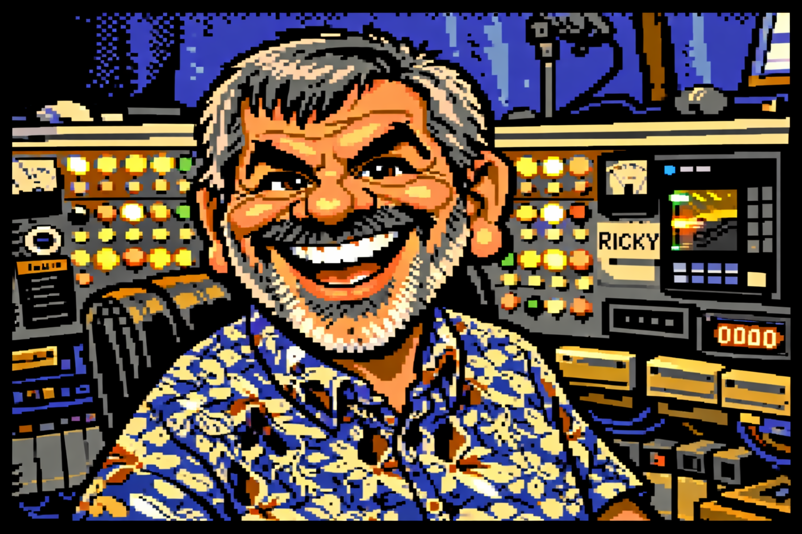
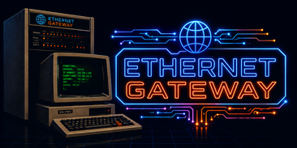

Gopher Protocol Reference
Gopher is the internet's menu system: a 1991 protocol from the University of Minnesota that predates the web's rise and still has hundreds of servers run by hobbyists. This page explains how it works on the wire and exactly how the gateway's browser speaks it.
Where the web is pages with links inside the text, Gopher is menus. Every screen is a list of items, and each item is one thing: another menu, a text file, a search, a file to download, or a telnet session. There is no layout, no styling, no scripts and no images on the page. That makes it one of the few corners of the internet that a 40-column Commodore 64 or an 80-column terminal can use completely.
The protocol is deliberately tiny. The client opens a TCP connection (port 70 by default), sends one line naming what it wants, and reads until the server closes. There are no headers, no cookies and no state between requests. Gopher+ (1993) adds, in an upward-compatible way, information about each item, alternate formats, and simple forms.
gopher:// URL scheme of RFC 4266, and
Gopher+ — item information, views and +ASK forms. The
compliance table lists each requirement and
where it stands.
Gopher lives in the gateway's text web browser; the keys are the browser's.
| Do this | Keys |
|---|---|
| Open the browser | B on the main menu |
| Go to a gopher server | G, then an address such as gopher://gopher.floodgap.com |
| Follow an item | L and its number |
| Go back | B |
| Gopher+ information on an item | I and its number; I then Enter for the whole menu |
| Fill in a Gopher+ form | opens by itself; F to return to it |
| Bookmark the page | K |
gopher://gopher.floodgap.com.
Its menu includes a search of all of Gopher, and it links to most of the
other servers still running.
Every request is a new connection, one line out, one reply back.
C: connects to host, port 70
C: selector CR LF
S: the menu, text file or binary file
S: closes the connection
The selector is an opaque string the server handed out
in an earlier menu; the empty selector asks for the server's top menu.
The client never interprets a selector: it sends back exactly what it was
given. A menu or text file ends with a line holding a single
. (the Lastline), and a binary file ends when the
server closes.
RFC 1436 says either side may close once the reply is complete. The
gateway reads until the server closes, but when a text file or menu has
ended with its . line (a dot, then CR LF, as the RFC
writes it) it waits only two more seconds, so a
server that keeps the connection open costs a moment rather than a
timeout.
Every type RFC 1436 defines, the Gopher+ additions, and the common extensions — and what the gateway does with each.
| Type | Defined by | Is | Shown as | Following it |
|---|---|---|---|---|
0 | RFC 1436 | Text file | name | Shows it; see dots. |
1 | RFC 1436 | Menu | name/ | Opens it. |
2 | RFC 1436 | CSO phone book | [CSO] | Asks a name, queries, shows each entry. |
3 | RFC 1436 | Error | ERR: text | Not followable. |
4 | RFC 1436 | BinHex (Macintosh) file | [HQX] | Shown as the text it is. |
5 | RFC 1436 | DOS binary | [BIN] | Saved to the transfer folder. |
6 | RFC 1436 | uuencoded file | [UUE] | Shown as the text it is. |
7 | RFC 1436 | Search | name? | Asks for words, shows the results menu. |
8 | RFC 1436 | Telnet session | [TEL] | Asks, then connects you; see telnet items. |
9 | RFC 1436 | Binary file | [BIN] | Saved to the transfer folder. |
+ | RFC 1436 | Redundant server | [ALT] | The item above it, on another server; see redundant servers. |
T | RFC 1436 | tn3270 session | [3270] | See telnet items. |
g | RFC 1436 | GIF image | [IMG] | Saved to the transfer folder. |
I | RFC 1436 | Other image | [IMG] | Saved to the transfer folder. |
: ; < | Gopher+ | Bitmap, movie, sound | [IMG] [MOV] [SND] | Saved to the transfer folder. |
i | extension | Information line | plain text | Not followable. |
h | extension | HTML document, or a web link (URL: selector) | name | Drawn as a web page, or the web link opened. |
s d p P | extension | Sound, document, PNG, PDF | [SND] [DOC] [IMG] [DOC] | Saved to the transfer folder. |
| anything else | — | Unknown | [???] | Shown, not followed (RFC 1436 allows ignoring or showing it). |
A saved file asks first, takes the selector's last name made safe, and is numbered rather than overwriting a file already there. It is at most 8 MB, what XMODEM, ZMODEM and Kermit can send on.
Why a server doubles some dots, and why a line can come out one dot short.
Gopher never says how long a text file is. The server ends it with a
line holding a single ., the way mail servers end a message
they pass on. That would cut the file short wherever a line of the file
itself starts with a dot, so RFC 1436 has the server add an extra
dot to every such line, and the client take it off again:
The file: On the wire: Shown:
Hello Hello Hello
.hidden ..hidden .hidden
... .... ...
. (end)
The gateway does the client's part for text files and the two text
encodings of a file (types 0, 4 and
6): it hides the closing line and takes one dot off any line
that starts with two.
Text that is not valid UTF-8 is read as ISO Latin-1, the character set
both specifications name, one line at a time; a Latin-1
é is drawn as itself. On a C64 or a 7-bit terminal
it is folded the way all internet text is.
Two item types ask the user something first.
C: selector<TAB>words CR LF
S: a menu of what matched
The browser asks Search:, sends the words after a TAB, and draws
the reply as a menu. Spaces mean and; some engines also take
and, or and not. The words stay in
the page's URL, so Back, Reload and bookmarks repeat the search.
C: query name CR LF
C: quit CR LF
S: -200:1:name: Ricky Bryce
S: -200:1:email: ...
S: 200:Ok.A CSO item is not Gopher at all: RFC 1436 says the client must “resort to a pure CSO nameserver protocol”. The browser asks Look up:, connects to the item's host (port 105 if the menu gives none), and shows each matching entry's fields. Codes of 500 and up are errors. Lookups only: logging in and changing entries are left out.
A + item is the item above it, held on another server.
1Documents<TAB>/docs<TAB>main.example<TAB>70
+Documents<TAB>/docs<TAB>mirror.example<TAB>70
The item a + stands in for is the last one above it that
is not a +, and it is fetched as that item's type. Both are
listed, the copy marked [ALT], so either can be picked.
RFC 1436 §3.5 also asks a smart client to move to the copy when a server “seems to be down”. The gateway does: following any of them, it tries the others in menu order, at most three, when the server cannot be reached — its name does not resolve, or nothing answers. A server that answers, even with an error or a missing item, is up, and its answer stands. This covers menus, text, searches (the copy is asked the same words), phone books and downloads. No more than three copies are tried, because each one that is down can take 15 seconds to give up on.
Types 8 and T are sessions, not documents.
RFC 1436: “Connect to given host at given port. The name to login as at this host is in the selector string.” The browser shows the host and the name to log in as, asks, and hands you to the gateway's own Telnet Gateway. Pressing ESC twice leaves and returns to the menu. Port 23 is used when the menu gives none.
Every address the host name resolves to is checked against the same rule as any other fetch (see safety), and the address checked is the one dialled — the name is not looked up a second time.
T item is a session with an IBM
mainframe, which expects a 3270 block-mode terminal. It is connected over
plain telnet, and the screen says so before connecting; many 3270 hosts
do not work that way.
RFC 4266 is how a gopher item is written as an address.
gopher://host[:port]/Tselector[%09search[%09gopher+ string]]| Part | Rule |
|---|---|
| Port | 70 when omitted. |
T | The item type. With no path at all, 1 (a menu) and the empty selector. |
| Selector | Percent-encoded. gopher://host/0/my%20file asks for my file. |
%09 search | A search's words, after an encoded TAB. |
%09 Gopher+ string | After a second TAB (the search may be empty): +, !, $, a view or ?. |
A selector is bytes, not text. Both RFCs allow any byte
but TAB, CR and LF. The gateway keeps a selector as the exact bytes the
menu gave: a Latin-1 é is written %E9 in
the URL and sent as that one byte, so a server whose selectors are not
UTF-8 is asked for what it listed. A gopher address typed at
G, and the words typed at a search prompt, go the same way:
as the bytes the terminal sent. Bookmarks, Back and Reload keep the
whole URL, search and Gopher+ string included.
Upward-compatible extensions: item information, alternate formats and forms.
A Gopher+ server marks its items with the menu's fifth field, and a
Gopher+ request adds a TAB and a command after the selector. The gateway
sends Gopher+ requests only for items marked
+ or ?, because servers that do not speak it
vary: Floodgap and SDF ignore the extra field and send the plain reply,
and the gateway takes a reply with no Gopher+ header as the plain reply
it is.
| Request | Asks for |
|---|---|
selector<TAB>+ | The item, in its default view. |
selector<TAB>+text/plain En_US | One of its views (formats), by MIME type and language. |
selector<TAB>! | The item's attributes. |
selector<TAB>$ | The attributes of every item in a menu. |
selector<TAB>words<TAB>+ | A Gopher+ search. |
| First line | Means |
|---|---|
+5340 | Exactly 5340 bytes follow. |
+-1 | Data ends with a . line (dots doubled, as in text files). |
+-2 | Data ends when the server closes. |
--1 … | An error. Its first token is a code: 1 not available, 2 try again later, 3 moved — followed by the menu line of where it went, which the gateway shows as a link. |
A counted reply ends the read as soon as its bytes are in, without waiting for the server to close. A download that arrives short of what its header promised is refused rather than saved as if whole.
| Block | Holds | Shown as |
|---|---|---|
+INFO | The item's menu line (always present). | The item, as a link. |
+ADMIN | Admin: who keeps it, Mod-Date: when it changed, and optional lines. | Each line; the date as YYYY-MM-DD hh:mm:ss. |
+VIEWS | The other formats it can be fetched in, with language and size. | Each a link that fetches that view; a file view is saved. |
+ABSTRACT | A short description, or a reference to one. | The text, and a link to the full one. |
+ASK | A form. | “Has a form”; see below. |
| others | Anything a server adds. | As sent. |
An item marked ? asks questions before it is fetched.
Following one fetches its attributes (!), and the form
screen opens on the questions in its +ASK block, in order.
S sends the answers.
| Line | Asks | On the form screen |
|---|---|---|
Ask: | One line of text, with an optional default after a TAB. | A text field. |
AskP: | A password. | Shown as stars. |
AskL: | Several lines. | Typed line by line, a blank line ending it (up to 50). |
AskF: | A file name to save the reply under. | A text field; the reply is saved in the transfer folder. |
Select: | A yes/no option (label:1 starts ticked). | A checkbox. |
Choose: | One of several choices, TAB-separated. | A pick list. |
ChooseF: | A local file to send. | A pick list of the transfer folder's files, nothing chosen at first. |
Note: | Nothing: text for the user. | Shown above the form. |
C: selector<TAB>+<TAB>1 CR LF
C: +N CR LF N = bytes that follow
C: one answer per line, in order
C: (an AskL: its line count, then its lines)
C: (a ChooseF: the file's bytes, last)
S: the reply, drawn as a page+ASK block, on a gopher page,
and is sent to a gopher item — so no web page can make the browser
send a file from the transfer folder. The Gopher+ spec suggests limiting
ChooseF to one directory; the gateway offers only the
transfer folder's own files.
A menu can point anywhere, so what it points at is checked.
| Rule | Why |
|---|---|
Hosts on this machine or the local network are refused, unless disable_ip_safety is on. | A menu on the internet must not be able to reach your LAN through the gateway. Every address a name resolves to is checked, and the checked address is the one connected to. |
| Control characters are stripped from everything shown, the C1 range included. | A hostile server could otherwise move the cursor or rewrite the screen. |
Pages: 512 KB, 15 seconds for the whole exchange with each server. At most three + copies are tried after a server that is down. | A server trickling bytes, or a menu listing many dead copies, cannot hold the session. |
| Files: 8 MB, 180 seconds. | What the transfer protocols can send on; time for a slow server. |
After a . line: 2 seconds more at most. | Either side may close then. |
What each specification asks of a client, and where the gateway stands.
| Requirement | Spec | Status |
|---|---|---|
| Port 70 by default; selector then CR LF | RFC 1436 §2 | Yes |
Menus: type, display, selector, host, port; end at the . line | RFC 1436 App. (Menu) | Yes |
| Ignore fields after the port | Gopher+ §2.1 | Yes; the fifth is read for Gopher+ |
| Unknown types ignored or shown as unknown | RFC 1436 §3.5 | Shown as [???] |
| Strip the extra dot from text lines | RFC 1436 App. (TextFile) | Yes (types 0, 4, 6) |
Be prepared for no . line (server just closes) | RFC 1436 App. (TextFile) | Yes |
| Either side may close after the reply | RFC 1436 App. (transactions) | Yes, 2 s after a . line |
| Binary files read until the server closes | RFC 1436 App. (types 5, 9) | Yes |
| Search: selector, TAB, words | RFC 1436 App. (type 7) | Yes |
| CSO items talk the CSO protocol | RFC 1436 §3.7 | Yes, lookups |
| Telnet items connect to host and port, login from the selector | RFC 1436 App. (type 8) | Yes |
| tn3270 items | RFC 1436 App. (type T) | Connected over plain telnet, with a warning |
+ items use their primary's transaction | RFC 1436 App. (type +) | Yes |
| Move to a redundant server when one seems down | RFC 1436 §3.5 | Yes |
| Display strings in ISO Latin-1 | RFC 1436 App.; Gopher+ App. | Yes; UTF-8 also read |
| Selectors are any bytes but TAB, CR, LF | RFC 1436 App.; RFC 4266 §2.1 | Yes, kept byte for byte |
URL: default port and type, %09 search and Gopher+ string | RFC 4266 §2 | Yes |
Gopher+ replies: count, -1, -2, errors 1–3 | Gopher+ §2.3 | Yes |
! and $ attributes; +INFO, +ADMIN, +VIEWS, +ABSTRACT | Gopher+ §2.5, §2.7, App. I | Yes |
| Alternate views | Gopher+ §2.6 | Yes |
+ASK: every question type, AskL line count, one file last | Gopher+ §2.8 | Yes |
As they appear on the wire (C: = the gateway, S: = the gopher server).
C: CR LF the empty selector: the top menu
S: iWelcome to the example server<TAB><TAB>error.host<TAB>1
S: 1Software<TAB>/software<TAB>example.org<TAB>70
S: 0About this server<TAB>/about.txt<TAB>example.org<TAB>70
S: 7Search the archive<TAB>/search<TAB>example.org<TAB>70
S: .
-> Welcome to the example server
Software/ [1]
About this server [2]
Search the archive? [3]C: /search<TAB>commodore 64 CR LF
S: 0C64 memory map<TAB>/docs/c64map.txt<TAB>example.org<TAB>70
S: .C: /about.txt<TAB>! CR LF
S: +-1
S: +INFO: 0About this server<TAB>/about.txt<TAB>example.org<TAB>70<TAB>+
S: +ADMIN:
S: Admin: Example Admin <admin@example.org>
S: Mod-Date: Mon Aug 30 17:02:01 1993 <19930830170201>
S: +VIEWS:
S: Text/plain: <2k>
S: .C: /feedback<TAB>! CR LF
S: +-1
S: +INFO: 0Send feedback<TAB>/feedback<TAB>example.org<TAB>70<TAB>?
S: +ASK:
S: Ask: Your name?
S: Choose: Rating<TAB>Good<TAB>Bad
S: .
...the user answers "Ricky" and picks Good...
C: /feedback<TAB>+<TAB>1 CR LF
C: +13 CR LF
C: Ricky CR LF
C: Good CR LF
S: +-2
S: Thank you! menu: 1Documents ... main.example 70
+Documents ... mirror.example 70
C: connect main.example:70 refused
C: connect mirror.example:70 answers
C: /docs CR LF| Term | Meaning |
|---|---|
| Selector | The string a client sends to fetch an item. Opaque to the client; any bytes but TAB, CR and LF. |
| Display string | The text a menu shows for an item. |
| Item type | The one character at the start of a menu line saying what the item is. |
| Lastline | The line holding only . that ends a menu or text file. |
| Dot doubling | The server adding a . to a text line that starts with one, so it cannot be mistaken for the Lastline. |
| Gopherspace | All the gopher servers, linked by their menus. |
| Gopher+ | The 1993 upward-compatible extension: attributes, views and forms. |
| View | One of the formats a Gopher+ item can be fetched in, named by MIME type and language. |
| CSO | The Computing Services Office “ph” phone-book protocol from the University of Illinois. |
| Veronica | The classic search engine of all gopherspace; Veronica-2 runs on Floodgap. |
Deep-dive reference pages for every protocol and interface, plus the character-set tables and ANSI escape-sequence reference.
UART profiles, EGT8080, HBIOS calls, BDOS/BIOS coverage.
128-byte blocks; CRC-16 / checksum negotiation.
Block-0 metadata, batch, exact size truncation.
Streaming; ZDLE, CRC-32, autostart, resume.
Send-Init negotiation; F / A / D / Z / B transfer.
C1 dual checksum, two-phase, GOO/BAD/ACK.
Hayes command set, S-registers, +++ escape.
IAC negotiation, every option, the NVT data phase.
Server, gateway, host keys, TOFU, auth modes.
Menus, every item type, Gopher+ attributes and forms.
Hex tables for every encoding: ASCII, ANSI, PETSCII, ATASCII, Baudot/ITA2, ZX Spectrum, TRS-80.
Cursor, colour/SGR, erase, and screen-mode escape codes, with the raw hex bytes.